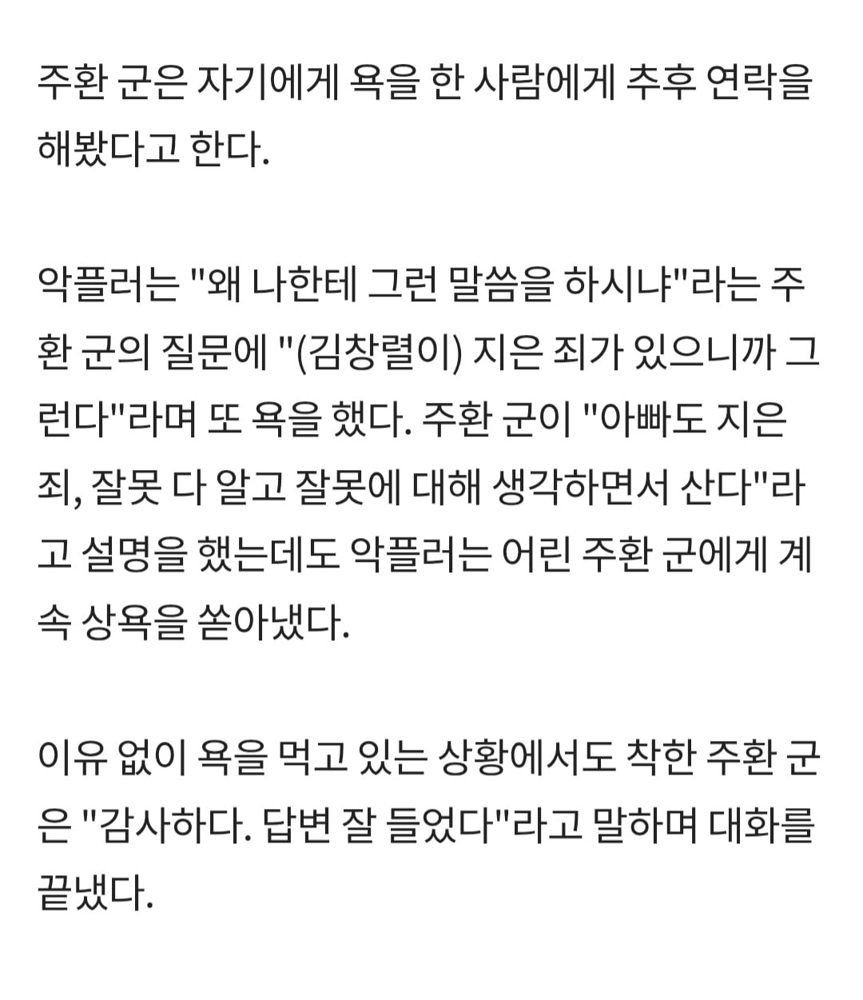
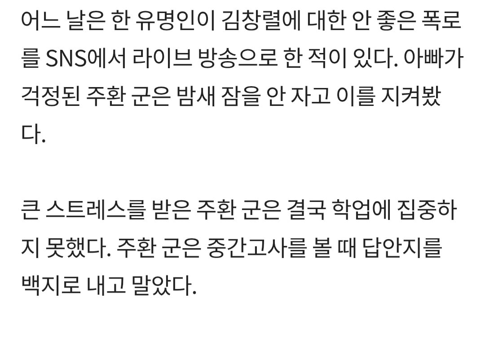
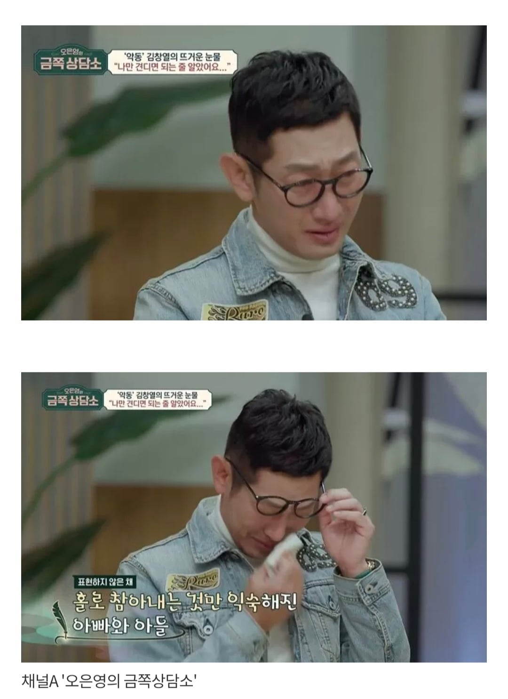
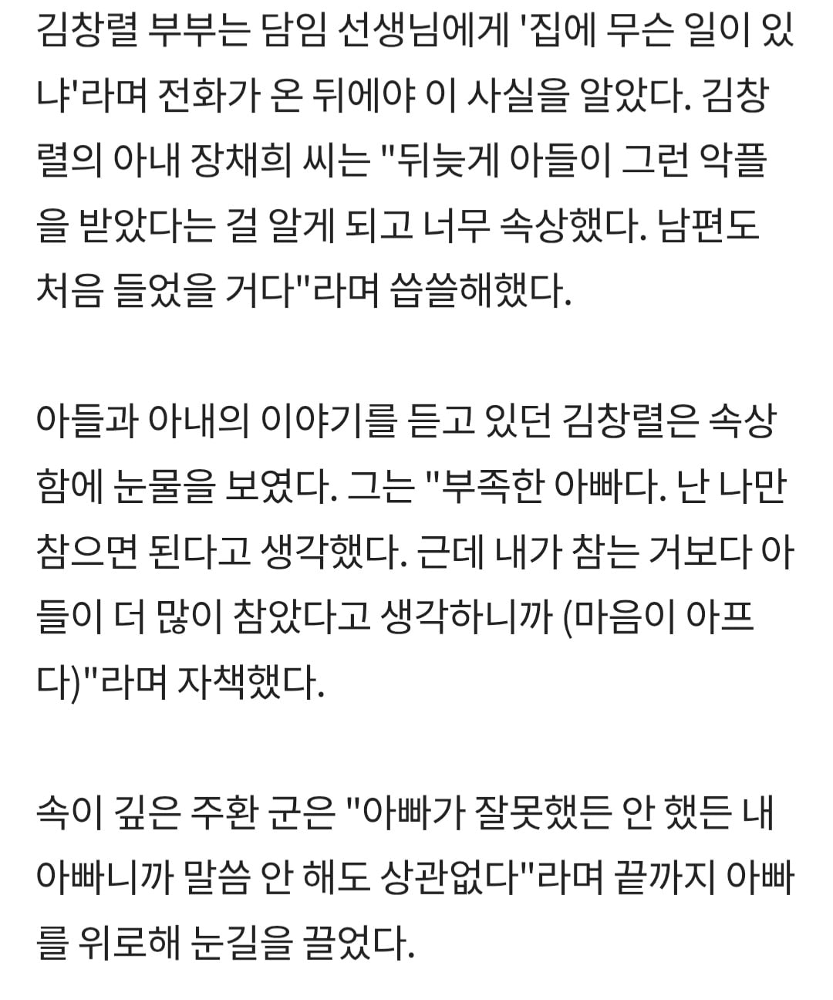
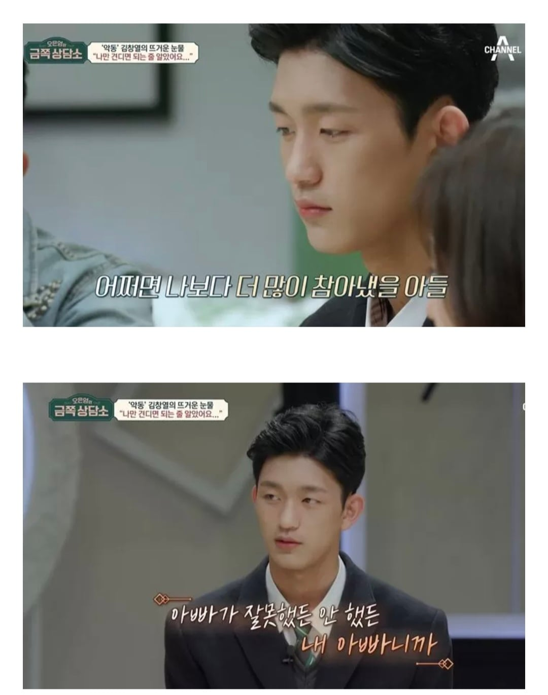
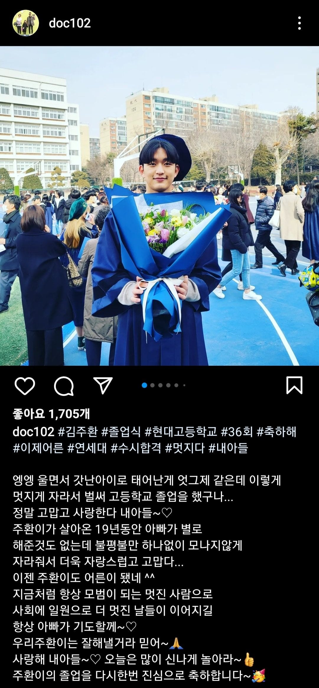

아들이 진짜 어른스럽고 착함

그 이후론 공부도 열심히해서 연세대 입학했고
최신 근황으로는 작년 12월 말에 해병대 입대 했다고 함.
이런 착한 아들이 있어서 창렬이햄이 성격 많이 유해진 것 같음.





아들이 진짜 어른스럽고 착함

그 이후론 공부도 열심히해서 연세대 입학했고
최신 근황으로는 작년 12월 말에 해병대 입대 했다고 함.
이런 착한 아들이 있어서 창렬이햄이 성격 많이 유해진 것 같음.
아아 대체 왜 학과를...
ㄹㅇ 개천에서 용났네 잘생겼는데 인성까지
선한데 얼굴도 잘생겼고 공부도 잘하네
아빠가 아들을 바른길로 이끈게 아니라
아들이 아빠를 바른길로 이끌었네 ㅋㅋㅋ
원래 자식을 키워봐야 어른이 된다고 전 멤버 다른 한쪽은 ㅋㅋㅋㅋ
근황 올라올때마다ㅋㅋㅋ
무친 아들 농사 초대박
이야 농사 지리게됐네
다큰 어른이 한번 더 성장할때가 있다면 자식이 생겼을때겠지. 김창열 자식복이 있네, 견부호자여.
잘생겼네.
유해진 잘 생겼네
진짜 아들은 잘키운듯 엄청 잘자라고 멘탈 개좋아
기럭지가 연기만 잘하면 연기해도 될거 같은데 연예계쪽은 안하려나?
걱정하지말자
현대고 다닌다
왜 국문과를..
솔찍히 국어국문과에서도 창렬이라는단어는 쓸거같음